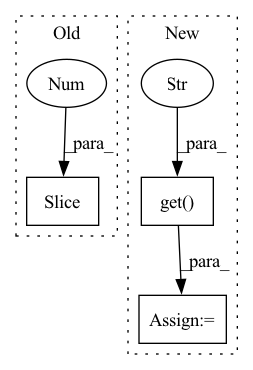

Pattern ID :9769
Before Change
graph_pred_x = graph_in.x.clone()
if self.graph_mode == "dq":
graph_pred_x[:, :-1 ] = pred_x
else:
graph_pred_x[:, 4:-1] = pred_x
After Change
def pred_n(self, input_signal, device, pred_length=1, **kwargs):
teacher_forcing_ratio = kwargs.get("teacher_forcing_ratio", 0) // non-zero only if specified and during training
test_mode = kwargs.get("test" , False) // True only during testing -> instead of loss, metric is returned.
snapshots = [snap for snap in iter(input_signal)]
T = len(snapshots)
input_length = T - pred_lengthIn pattern: SUPERPATTERN
Frequency: 4
Non-data size: 3
Instances Fragment ID: 35115495
Project Name: ais-bonn/vp-suite
Commit Name: 3b554438d5ca8fcd64241c10f424902093206449
Time: 2021-10-14
Author: boltres@ais.uni-bonn.de
File Name: models/graph_pred/rgcn.py
M Class Name: RecurrentGCN
N Class Name: RecurrentGCN
M Method Name: pred_n(4)
N Method Name: pred_n(4)
M Parent Class: torch.nn.Module
N Parent Class: torch.nn.Module
M File Name: models/graph_pred/rgcn.py
N File Name: models/graph_pred/rgcn.py
M Start Line: 42
M End Line: 92
N Start Line: 51
N End Line: 103
Before Change
f"File {filename} not found in the list of available files: {list(self.FILE_ID_NAME.keys())}."
GoogleDriveDownloader(self.FILE_ID_NAME[filename], path, skip_existing=True, verbose=False).download()
ts = np.load(path)
ts = ts[:, :700 ]
n_neurons, n_shape = ts.shape
sample = np.random.randint(n_neurons, size=sample_size)
data = ts[sample, :]After Change
data[neuron, :] = data[neuron, :] / (np.max(data[neuron, :]) + 1e-5)
self.original_time_series = data
self.x = torch.tensor(data.T, dtype=torch.float32, device=device)
self._n_time_steps = int(np.clip(kwargs.get("n_time_steps" , self.max_time_steps) , -np.inf, self.max_time_steps))
@property
def n_time_steps(self): Fragment ID: 35115493
Project Name: neurotorch/neurotorch
Commit Name: e17747165413ef12bdb978271cb53171dca43bc2
Time: 2022-10-12
Author: 50332514+JeremieGince@users.noreply.github.com
File Name: tutorials/time_series_forecasting_wilson_cowan/dataset.py
M Class Name: WSDataset
N Class Name: WSDataset
M Method Name: __init__(6)
N Method Name: __init__(6)
M Parent Class: Dataset
N Parent Class: Dataset
M File Name: tutorials/time_series_forecasting_wilson_cowan/dataset.py
N File Name: tutorials/time_series_forecasting_wilson_cowan/dataset.py
M Start Line: 47
M End Line: 49
N Start Line: 48
N End Line: 58
Before Change
exception = None
tracker.get_intent_of_latest_message()
intent_ranking = tracker.latest_message.get("intent_ranking")
if intent_ranking and intent_ranking[1:4 ]:
suggested_intents = []
mongo_processor = MongoProcessor()
for intent in intent_ranking[1:4]:After Change
action_config = self.retrieve_config()
intent_ranking = tracker.latest_message.get("intent_ranking")
num_text_recommendations = action_config["num_text_recommendations"]
trigger_rules = action_config.get("trigger_rules" )
suggested_intents = []
if num_text_recommendations and intent_ranking:
mongo_processor = MongoProcessor()
for intent in intent_ranking[1: 1+num_text_recommendations]: Fragment ID: 35115492
Project Name: digiteinfotech/kairon
Commit Name: 92f604f4aaa1b0a5d2db14ba64fe8a48af0ad71d
Time: 2022-09-22
Author: pandey.udit867@gmail.com
File Name: kairon/actions/definitions/two_stage_fallback.py
M Class Name: ActionTwoStageFallback
N Class Name: ActionTwoStageFallback
M Method Name: execute(3)
N Method Name: execute(3)
M Parent Class: ActionsBase
N Parent Class: ActionsBase
M File Name: kairon/actions/definitions/two_stage_fallback.py
N File Name: kairon/actions/definitions/two_stage_fallback.py
M Start Line: 42
M End Line: 58
N Start Line: 52
N End Line: 71
Before Change
)
rss = feedgenerator.Atom1Feed(**data)
shared_stories = MSharedStory.objects.filter(user_id=user.pk).order_by("-shared_date")[:25 ]
for shared_story in shared_stories:
feed = Feed.get_by_id(shared_story.story_feed_id)
content = render_to_string("social/rss_story.xhtml", {After Change
raise Http404
limit = 25
offset = request.GET.get("page" , 0) * limit
username = username and username.lower()
profile = MSocialProfile.get_user(user.pk)
params = {"username": profile.username_slug, "user_id": user.pk} Fragment ID: 35115497
Project Name: samuelclay/NewsBlur
Commit Name: 9499f03667a466dd2e6d88f6a64fbe7a5efff2bd
Time: 2022-06-06
Author: samuel@ofbrooklyn.com
File Name: apps/social/views.py
M Class Name: AnonimousClass
N Class Name: AnonimousClass
M Method Name: shared_stories_rss_feed(3)
N Method Name: shared_stories_rss_feed(3)
M Parent Class:
N Parent Class:
M File Name: apps/social/views.py
N File Name: apps/social/views.py
M Start Line: 1386
M End Line: 1386
N Start Line: 1359
N End Line: 1388